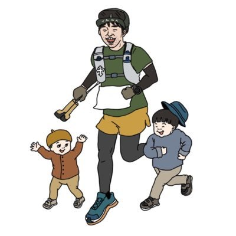

株式会社ウィルトラスト様
座学＋実践＋伴走型開発支援の三段構成で
企業と個人をAIによってアップデート
AIの急速な進化は既存の常識を大きく変え、
企業がAIを活用せずに成長を続けることは困難な時代です。
AIの活用方法や編集スキルの習得を目的とした対面での集中研修。
初回研修で得たスキルを現場で実践していくにあたり、専属メンターが伴走し課題解決を徹底サポート
（10時間 / 人）
プログラム全体期間：6ヶ月間
・初回研修：プログラム1〜2日目の2日間で開催
・実践期間：初回研修後から6ヶ月間（オンライン講座学習の開催および伴走型開発支援を実施）
・最終成果発表会（3時間）：プログラム開始6ヶ月後を目処に開催
実践経験豊富な専門家が、貴社のAI変革を支援します
株式会社ウィルフォワード代表
経営・AX・人材開発の専門家として多くの企業支援実績を持つ。AI活用の戦略設計に精通。

生成AI活用ディレクター
Web/映像領域でのAI実装経験が豊富。一般社団法人生成AI活用普及協会「生成AIパスポート」保有。
AI業務改善コンサルタント
人事・業務プロセス改善におけるAI活用の実践者。一般社団法人生成AI活用普及協会「生成AIパスポート」保有。
貴社の課題を、ぜひ私たちにお聞かせください。AI時代の波を乗りこなし、貴社がさらなる高みへと飛躍するための最適なAI活用の道筋を、経験豊富な専門家チームが、貴社と共に徹底的に見つけ出し、実現に向けて伴走いたします。未来を共に創りましょう。